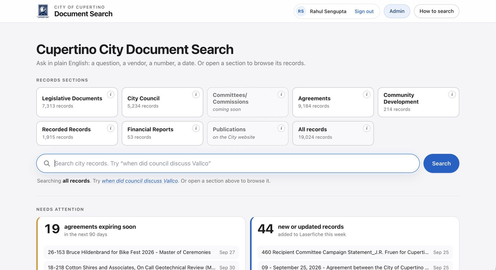
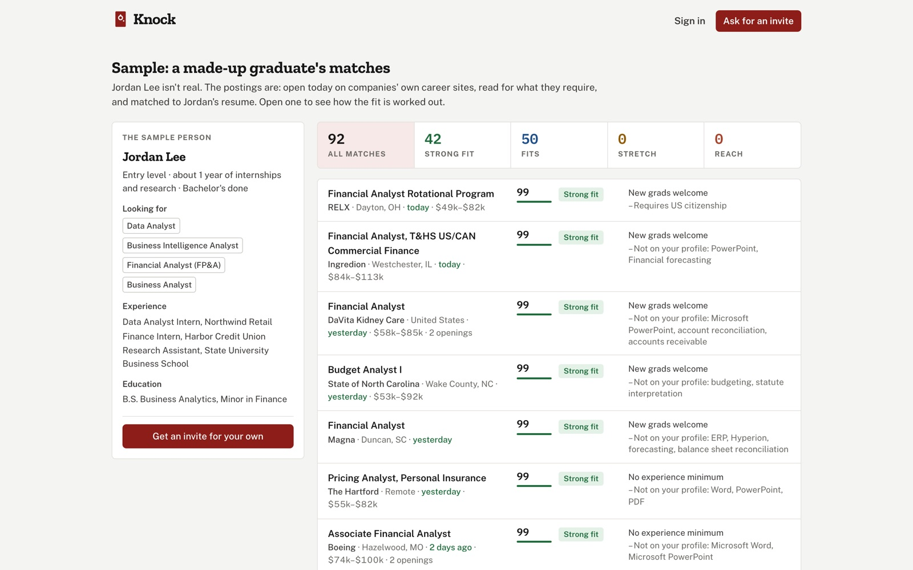
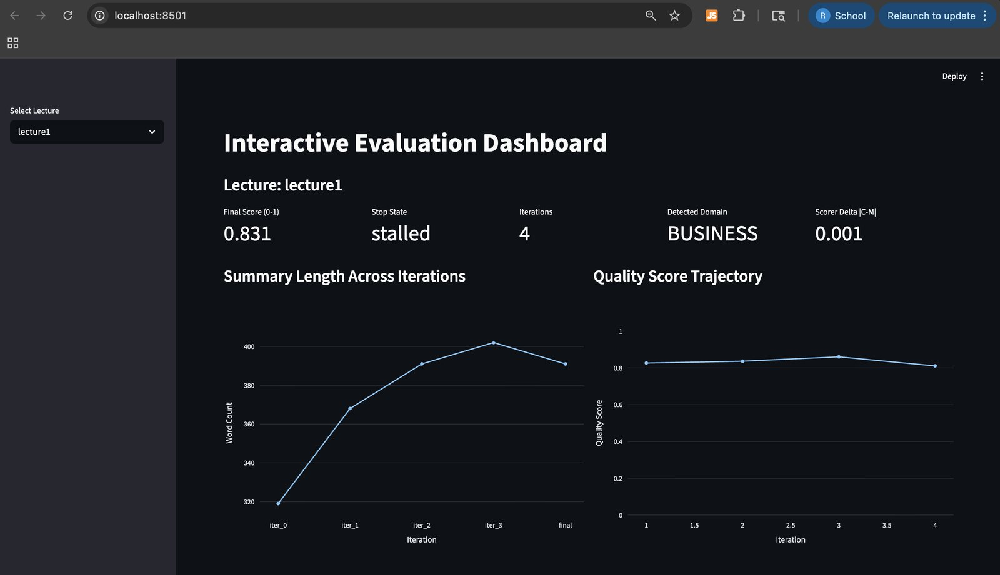
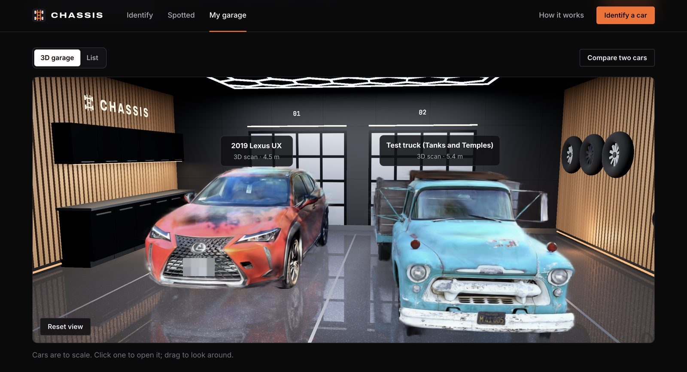
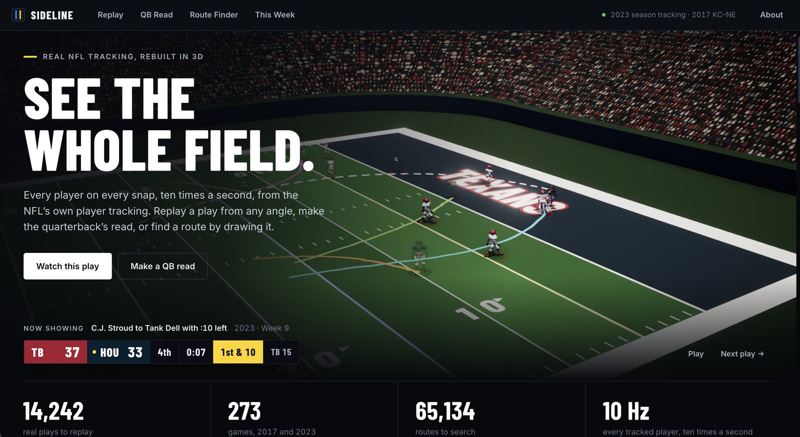
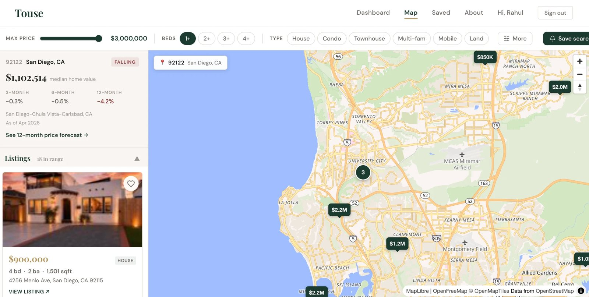

Public Records Search
Search and plain-English questions over the City of Cupertino's public records, about 1.2 million pages going back to 1953. It's now used across the City by about 200 staff.

I'm an AI/ML software engineer in the Bay Area, and I'm doing my master's in CS at Georgia Tech with a focus on machine learning. I'm most interested in large ML systems.
Outside of work I'm usually building something. Right now that's Knock. Here's some of what I've made.
Search and plain-English questions over the City of Cupertino's public records, about 1.2 million pages going back to 1953. It's now used across the City by about 200 staff.

A fantasy football app for ESPN and Sleeper leagues, running for a group of my friends. It tells you who to start, who to pick up and which trades make sense, and there's a sample league anyone can try.
Read more Live demo Source private, available on request
Every morning, finds new jobs you actually qualify for, straight from companies' own career sites, and tailors your resume and cover letter for the ones you pick. It's in an invite-only beta, with a sample anyone can try.
Read more Live demo Source private, available on request

A way to grade LLM-written summaries without a reference answer, built with Honda Research Institute and 99P Labs. Its scores line up with human faithfulness ratings at 0.81 Spearman.

A Mac app that names a car from one photo and rebuilds it in 3D at real size from a 30-second walk-around video.
Read more Source private, available on request

Real NFL plays rebuilt in 3D from the league's player-tracking data, viewable from any angle. It can also recover player positions from ordinary TV footage, with a median error of 1.5 yards against the NFL's own tracking.
Read more Source private, available on request

Works out how much house you can actually afford across six loan types, and forecasts home prices for each ZIP code a year out.
Read more Source private, available on request

Away from a keyboard: thirteen years of competitive swimming and water polo. I camp, fish and hike, usually somewhere without signal, and I follow the NFL, NBA and UFC closely enough that more than one of the projects above started there.
Jun 2025 to Jun 2026
Eurofins USA · San Diego, CA (remote)
Built quarterly revenue forecasts across 45+ business units, cutting normalised RMSE from 0.94 to 0.72, and the Power BI dashboards leadership used for sales planning.
Sep 2025 to Mar 2026
Honda Research Institute & 99P Labs · San Diego, CA (hybrid)
Designed a reference-free LLM-as-judge framework and the controller that decides when a refinement run is done. Its scores matched human faithfulness ratings at 0.81 Spearman.
Sep 2023 to Sep 2024
CitMit AI · UC Berkeley Haas & UCSD Blackstone Launchpad
Built an AI system that checks construction plans against building code, cutting estimated review time by about half, and the React front end around it.